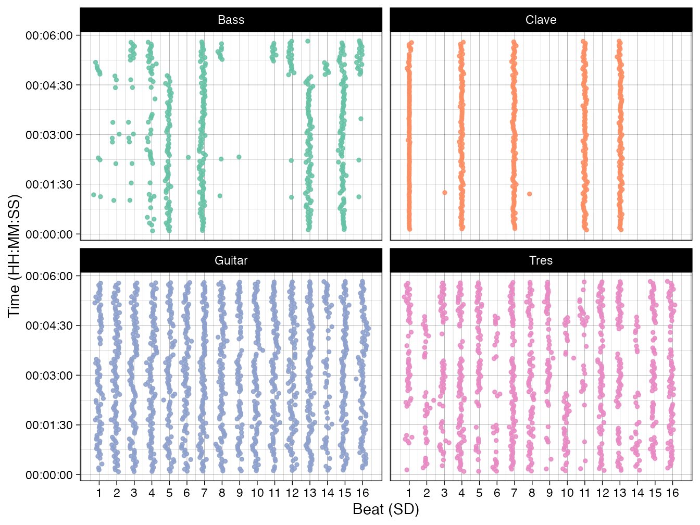
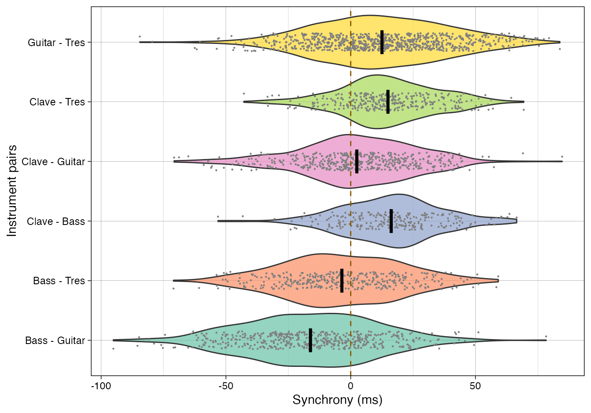
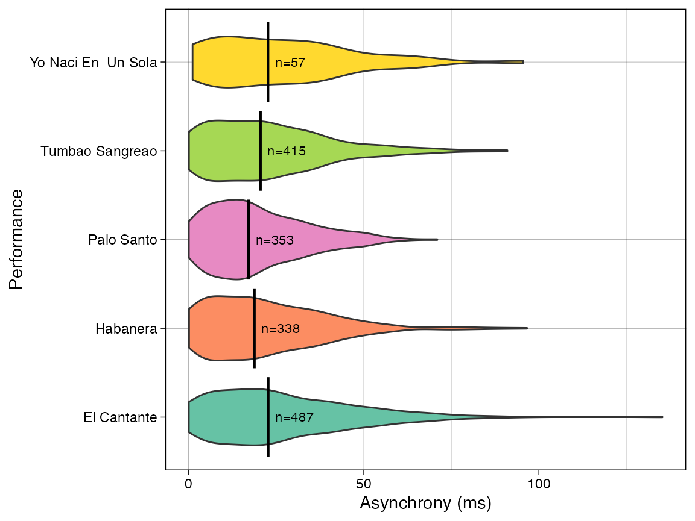

onsetsync - Quick Guide
onsetsync.Rmdonsetsync is a R package for musical assessing synchrony
between onsets in music. There are functions for common operations such
as adding isochronous beats based on metrical structure, adding
annotations, calculating classic measures of synchrony between
performers, and assessing periodicity of the onsets, and visualising
synchrony across cycles, time, or another property.
Installation
You can install the current version of onsetsync from
Github by entering the following commands into R:
if (!require(devtools)) install.packages("devtools")
devtools::install_github("tuomaseerola/onsetsync")Usage
## [1] '0.4.8'Reading in data
Read onsets of one Cuban Son performance titled Palo Santo from IEMP dataset at https://osf.io/sfxa2/. This song has the onsets and the annotations about the metric cycles already extracted and defined and comes with the package.
Go and listen to the song at OSF.
CSS_Song2 <- onsetsync::CSS_IEMP[[2]] # Read one song from internal data
CSS_Song2 <- dplyr::select(CSS_Song2,Label.SD,SD,Clave,Bass,Guitar,Tres,
CycleTime,Cycle,Isochronous.SD.Time) # Select some columns
print(knitr::kable(head(CSS_Song2),format = "simple",digits = 2))| Label.SD | SD | Clave | Bass | Guitar | Tres | CycleTime | Cycle | Isochronous.SD.Time |
|---|---|---|---|---|---|---|---|---|
| 1:1 | 1 | NA | NA | NA | NA | 5.04 | 1 | 5.04 |
| 1:2 | 2 | NA | NA | 5.28 | NA | NA | 1 | 5.26 |
| 1:3 | 3 | NA | NA | 5.48 | NA | NA | 1 | 5.48 |
| 1:4 | 4 | NA | 5.71 | 5.71 | 5.73 | NA | 1 | 5.71 |
| 1:5 | 5 | NA | 5.93 | 5.94 | 5.92 | NA | 1 | 5.93 |
| 1:6 | 6 | NA | NA | 6.15 | 6.14 | NA | 1 | 6.15 |
Reading data from is easy either from CSV files in your computer
(using read.csv function) or directly from OSF using
get_OSF_csv function that comes with the library.
Visualise onsets structures
As an overview, we can visualise the onsets across the beat sub-divisions for each instrument and do this across the time. Note that time run vertically (from bottom to up) here.
fig1 <- plot_by_beat(df = CSS_Song2,
instr = c('Bass','Clave','Guitar','Tres'),
beat = 'SD',
virtual='Isochronous.SD.Time',
pcols=2)
print(fig1)
Calculate asynchronies
To what degree are the pairs of instruments synchronised to each other? Let’s visualise the synchrony of all pairings of the instruments in this example.
inst <- c('Clave','Bass','Guitar','Tres') # Define instruments
dn <- sync_execute_pairs(CSS_Song2,inst,beat = 'SD')
fig2 <- plot_by_pair(dn) # plot
print(fig2) 
As we saw in the first figure, the instruments usually play widely different amounts of onsets in a piece, and these are bound to be at different beat sub-divisions, the mutual amount of comparable onsets for each pair often varies dramatically. Comparison of mean asynchronies across sub-divisions can be facilitated by taking random samples of the joint onsets. Here we choose a random 200 matching onsets and re-calculate the comparison of asynchrony with this subset 100 times.
set.seed(1234) # set random seed
N <- 200 # Let's select 200 onsets
Bootstrap <- 100
d1 <- sync_sample_paired(df = CSS_Song2,
instr1 = 'Clave',
instr2 = 'Bass',
n = N,
bootn = Bootstrap,
beat = 'SD')
dplyr::summarise(data.frame(d1), N=n(), M = mean(asynch*1000), SD = sd(asynch*1000))## N M SD
## 1 20000 16.26593 19.54912There are other measures to summarise the asynchronies and visualise them.
Calculate synchrony across performances
We can apply the measures to a corpus of performances. Here we load five Cuban Son and Salsa performances and run the same analysis as above across the performances.
corpus <- onsetsync::CSS_IEMP
D <- sync_sample_paired(corpus,'Tres','Bass', beat = 'SD')
D <- D$asynch
D$asynch_abs <- abs(D$asynch)*1000
fig3 <- plot_by_dataset(D,'asynch_abs','name', box = TRUE)
print(fig3)
For more examples, see documentation.
Note: How do I get onsets from my music?
Note that onsetsync is not dedicated to extraction of
onsets from audio as that should be done using other tools (e.g. Librosa, or MIR
Toolbox for Matlab, or Sonic Visualiser using
established onset detection algorithms). Here we assume that you have
extracted the onsets of the music from a recording already in one of
these tools, and preferably checked them by hand. It is already more
meaningful to carry out analyses of synchrony when you have the metrical
information (cycles and beats) identified. If your starting point is
MIDI, getting the onsets is just a conversion operation away (I would
recommend music21
for this purpose), although annotation might still be required.